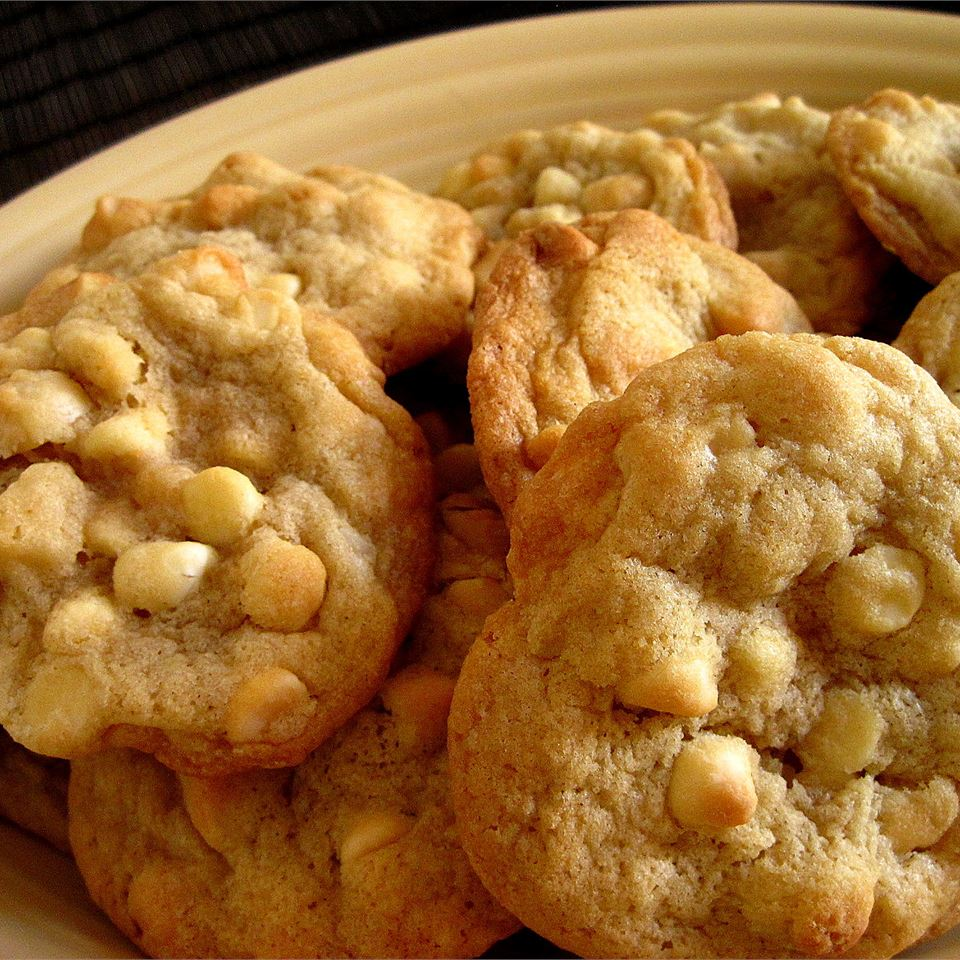

White Chocolate Macadamia Nut Cookies

Description
The best type of cookie and it is NOT up for debate! Soft cookie dough mixed with delicious white chocolate and macadamia nuts.
Ingredients
- 1 cup butter, softened
- 3/4 cup packed light brown sugar
- 1/2 cup white sugar
- 2 eggs
- 1/2 teaspoon vanilla extract
- 1/2 teaspoon almond extract
- 2 1/2 cups all-purpose flour
- 1 teaspoon bking soda
- 1/2 teaspoon salt
- 1 cup coarsely chopped macadamia nuts
- 1 cup corsely chopped white chocolate
Steps
- Preheat the oven to 350 degrees F (175 degrees C).
- Cream butter, brown sugar, and white sugar together in a large bowl until smooth. Beat in eggs one at a time, then stir in vanilla and almond extracts.
- Combine flour, baking soda, and salt in another bowl. Gradually stir the dry ingredients into the butter mixture. Fold in macdamia nuts and white chocolate.
- Drop dough by teaspoonfuls onto ungreased cookie sheets
- Bake in the preheated oven until golden brown, about 10